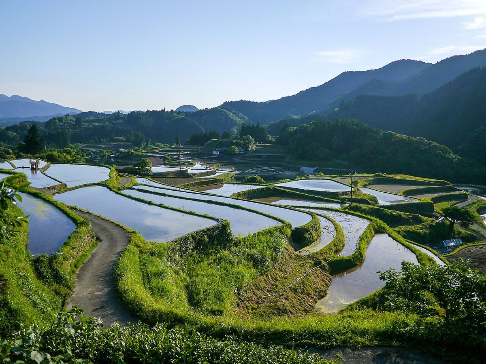
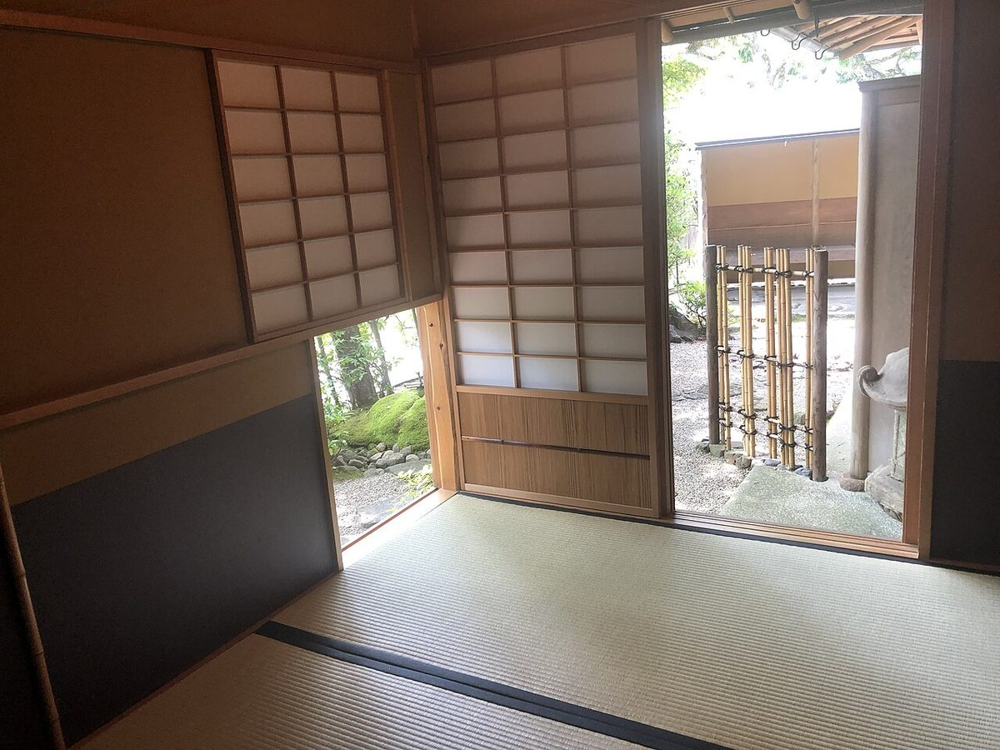
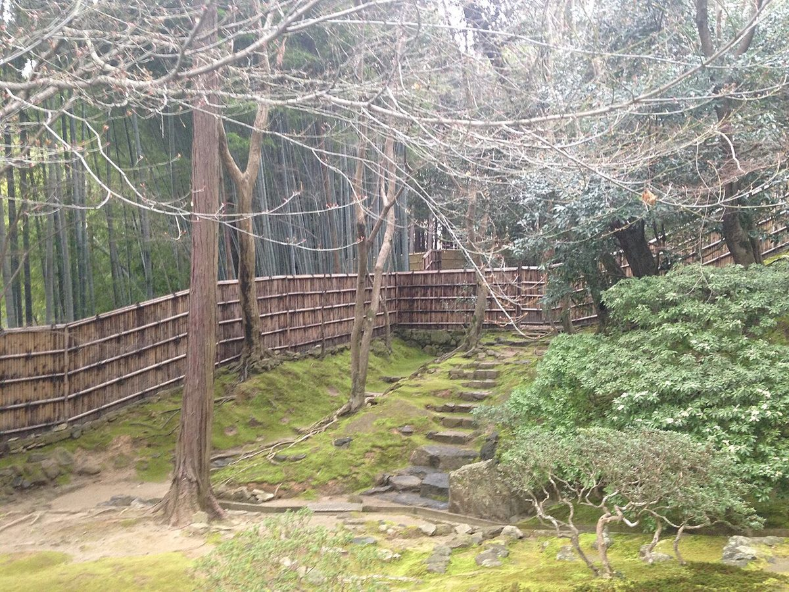
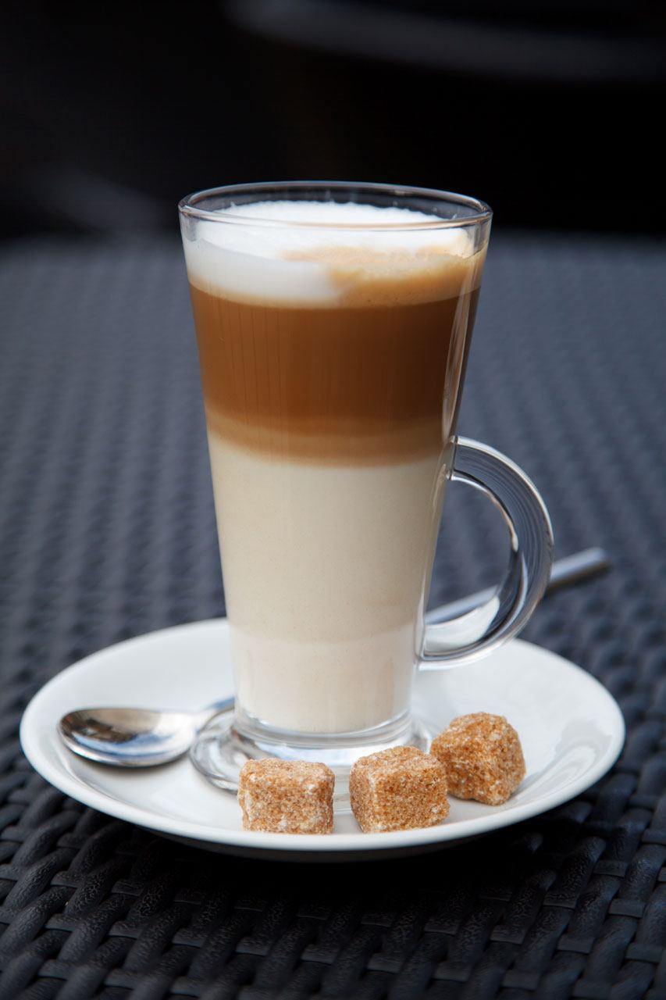
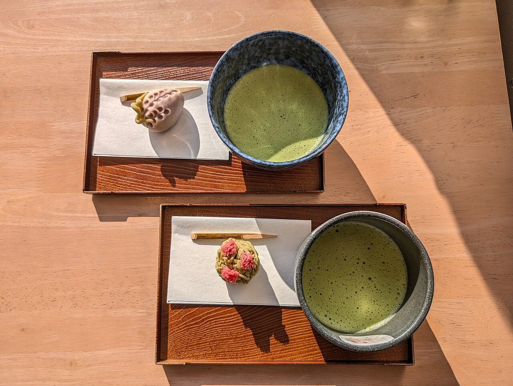
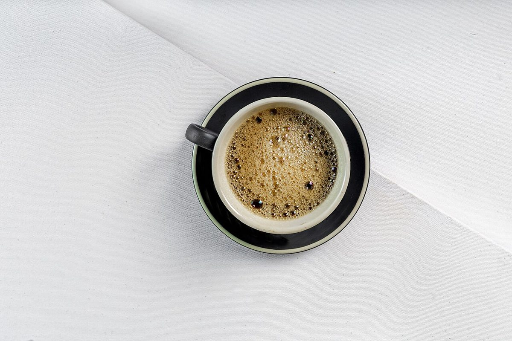
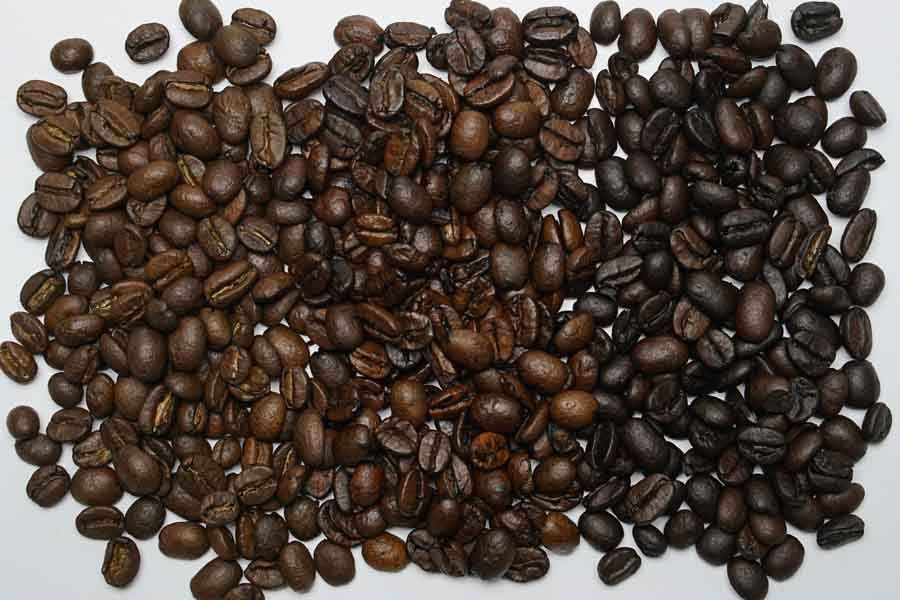
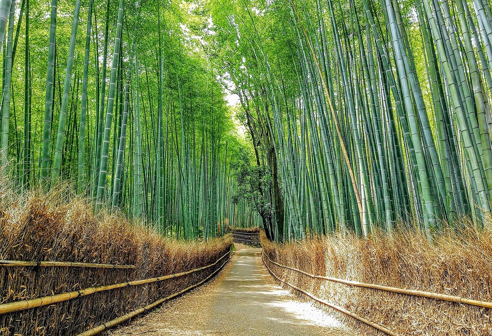

アイスコーヒー
価格 準備中

ABOUT
滋賀県甲賀市土山町の鮎河にある、古民家を改装したカフェです。バイクで訪れるライダーを迎えるお店として知られ、ブログではオーナーご自身もバイクに乗る方だと紹介されています。
店名の「隠(かくれ)」の由来は公表されている情報が見つかりませんでした。このページでは、山里の古い家にひっそり「隠れる」ような場所、という制作側のイメージで構成しています。




MENU
掲載情報やお客様の投稿で見られる品を並べています。価格・提供内容・季節の入れ替えはすべて準備中です。
価格 準備中

価格 準備中

湯呑みで出てくる、との口コミがあります。数に限りがある日も。
価格 準備中

価格 準備中

価格 準備中

VOICE
以下は制作側が作成したイメージ例であり、実在のお客様の声ではありません。
イメージ例ツーリングの途中に立ち寄りました。古い家の落ち着いた空気に、肩の力がすっと抜けます。
休日のご来店(イメージ)
イメージ例畳の席でいただく甘いものが、走ってきた体にちょうどよかったです。
ご夫婦でのご来店(イメージ)
イメージ例山の緑を眺めながら、ゆっくり一杯。また天気のいい週末に行きたいです。
ひとりでのご来店(イメージ)
ACCESS

PHOTO CREDITS
掲載写真はフリー素材のイメージで、店舗の実際の様子ではありません(国外・撮影地不明を含みます)。縮小・切り抜きなどの加工をしています。